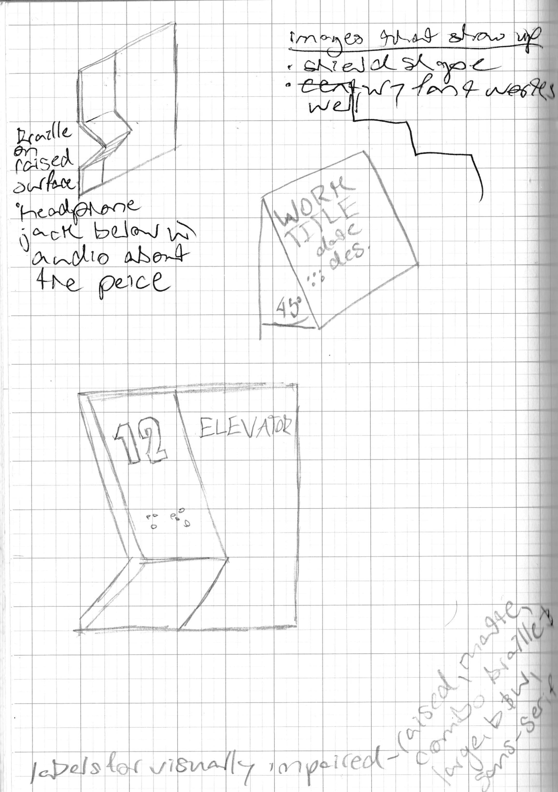

DOMA Museum Accessibility
I worked with David Owsley Museum of Art (DOMA) for ways to make the museum more accessible and enjoyable. I decided to focus on making the museum more accessible to people with visual impairments who use canes. These simple changes could help all people access the museum resources.
Solution One: Map
I redesigned the maps to be more simple and have braille. There were museum maps at the front desk but they aren't labeled, and they are small and low contrast. According to Smithsonian guidelines white text on black backgrounds are easier to read for people with low vision. My research also suggested that thick lines, a lot of spacing and large, sans serif type was easier to read. I designed the brochure to be one-sided so that braille could be printed over the images.
Solution Two: Tile
The museum had certain things in place already for people who use canes to be able to access it, such as grip strips on the stairs, but those are chipping and unsightly, they don't match with the aesthetic of the museum and aren't consistent.
My solution was to put a raised tile pattern on the stairs to signal to cane users that they were approaching the stairs. This solution fits better with the aesthetic of the museum as well. I also applied to tile pattern to doorways because currently there is nothing to signal that you're moving into a different room.
Solution Three: Braille Signs
My third solution was a simple one. I found by trying to feel the braille on room signs in the museum that reaching out to a flat surface strains your wrist. A simple UX solution is to make room signs that have braille on a surface that is tilted at an angle to make reading them more easy for braille users.
